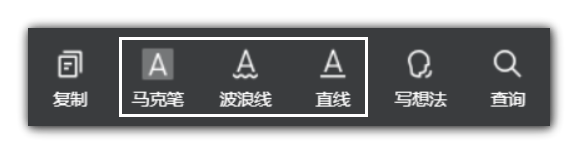

在设置页，你可以设置文本导出效果。
一、什么是一级标注、二级标注、三级标注？
在微信读书中，标注分三类，分别是波浪线、马克笔和直线（如下图）：
被直线标注的文本就是设置页面中所谓 一级标注 ，被马克笔标注的文本是 二级标注 ，被波浪线标注的文本是 三级标注 。
二、什么是前缀、后缀？
插件可为你的不同级别的微信读书标注补充文本，补充在标注前面的部分为前缀，补充在后面的部分为后缀。
你可以在输入框中设置标注前后缀。设置为前缀的内容将会在导出文本的时候添加到标注开头，设置为后缀的内容则将会在导出文本的时候添加到标注之后。
比如，如果你希望书本中二级标注（用马克笔标注的文字）导出来后在Markdown中加粗，你只需要将二级标注前后缀设置为两个星号：
**
又比如，如果你希望书本中用直线标注的文字（一级标注）导出来后加下划线，你只需要将一级标注前后缀分别设置为<u>和</u>。
再比如，当你希望被二级标注（用马克笔标注的文字）导出来之后在最前面包含一个"○"。你只需要将二级标注后缀则设置为空（也就是不设置任何内容），二级标注的前缀设置为：
○
三、代码块前缀、后缀、语言？
当你借助插件复制书本中的代码块的时候，你可以在“代码块语言”下设置代码块语言。比如有一段代码是 python，在这个输入框中输入 python 后你复制得到的文本在 Markdown 中会按照 python 的语法高亮显示。
有时你可能不希望导出的代码块前后包含“```”，这时你可以将代码块前后缀设置为空。
四、五个有关正则表达式的部分是干嘛的？
当微信读书中的三种标注不能满足你添加前后缀的需求时，你可以借助正则表达式匹配标注，被匹配的标注可被添加前后缀。
如当你要匹配一个开头为"提示"二字的标注时，可输入正则表达式：
^提示
下面是一些比较常用的正则表达式：
①匹配开头为“步骤x：”(x为0到9中任意数字)的标注：
^步骤[0-9]{1,2}：[\S| ]*$
类似地，你可以写
②匹配图片标题如“图2-5 404错误响应”：
^图[0-9]{1,2}-[0-9]{1,2} [\S| ]*$
③匹配表格标题如“表1-1 Flask的依赖包”：
^表[0-9]{1,2}-[0-9]{1,2} [\S| ]*$
④匹配开头为数字加一点的标注如“1．Flask与HTTP”：
^[1-9]．[\S| ]*$
⑤匹配开头为“注意：”或“附注：”或“提示：”的标注如“提示：你可以借助Chrome扩展“微信读书笔记助手”快速导出笔记为Markdown文本：
^(注意|附注|提示)：[\S| ]*$
注意：
1. 选中正则表达式右下方的选中框该正则表达式才会生效。
2. 因为正则表达式的设置很容易影响导出效果，所以最好在对正则表达式有一定了解的情况下使用，并在编辑器或在线网站中对正则匹配的内容进行测试。
下面是一个可供学习正则表达式的教程：
learn-regex-zh五、什么是一级标题前缀、二级标题前缀、三级标题前缀？
你平时在读书页看见的目录对应于不同级别的标题。
你可以在设置页中设置标题导出级别。
默认级别分别是二级：## 、三级：### 和四级：#### 。你可以通过自己改变井号数量来改变标题级别，从而得到不同的标题导出效果。
注意：你需要在最后一个井号之后加一个空格标题才会正常显示。
事实上，修改标题级别本质上是在修改标题的前缀。
六、什么是想法前后缀？
想法也就是你平时读书的时候在书中发表的想法。前后缀与前面提到概念的一样。当你将前后缀设置为两个星号（**）时，导出的想法将会被加粗。
七、热门标注显示标注人数？
由选项“热门标注显示标注人数”，你可以设置导出的热门标注中是否带标注人数。点击选择后，导出的内容中将会包含每条热门标注被标记的人数，否则不会。
八、开启复制按钮？
当你希望复制书本中的图片（Markdown文本格式而不是图片本身）、注释或是代码块的时候，点击该选项。